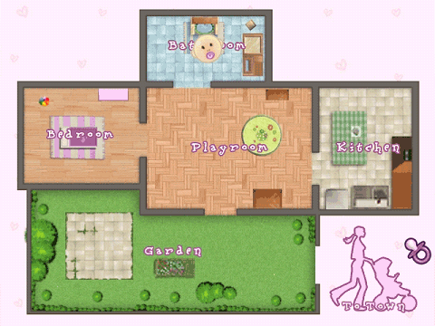

9 |
The house map |
 |
|
There are two maps in the game; your home and your town. Press the A Button on the House Icon to view all the rooms in your house. Then press the A Button on the 'To Town' icon to view all the shops in town.

The Playroom In the playroom, the baby can listen to music, play with you and their toys to their heart's content. When the baby is old enough, here or the garden is where you teach them crawling, balancing and walking.
The Bathroom The bathroom is for cleaning and washing your baby. In the Bathroom is where you will change your baby's nappy or give your baby a bath.
The Bedroom What a cosy bedroom! In the Bedroom you can lull your baby to sleep so they can regain energy. Also in this room you are able to change your baby's clothes.
The Kitchen In the kitchen, you can prepare meals and feed your baby. Your baby will eat different foods at different ages. There are different recipes and meals you can prepare for your baby depending on your baby's age.
The Garden Take your baby to the Garden for some outdoor activities and for some fresh air. Do not forget to use sun cream while outside to protect your baby's sensitive skin. Without sun cream your baby's skin could be damaged by the sun's harmful rays. |
 |
 |
 |